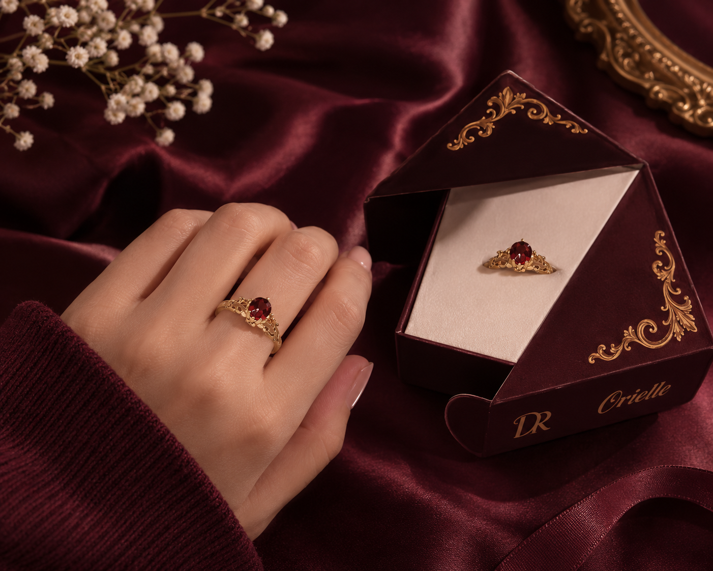
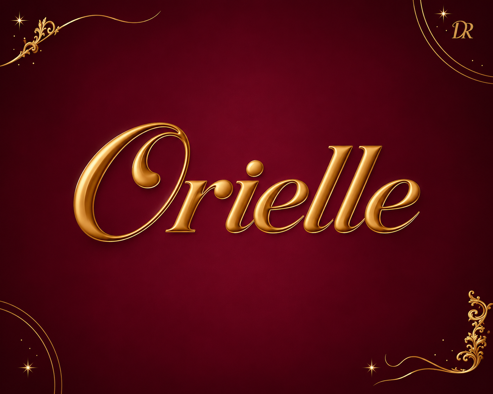
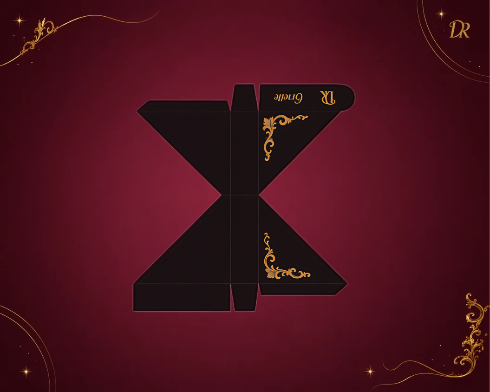
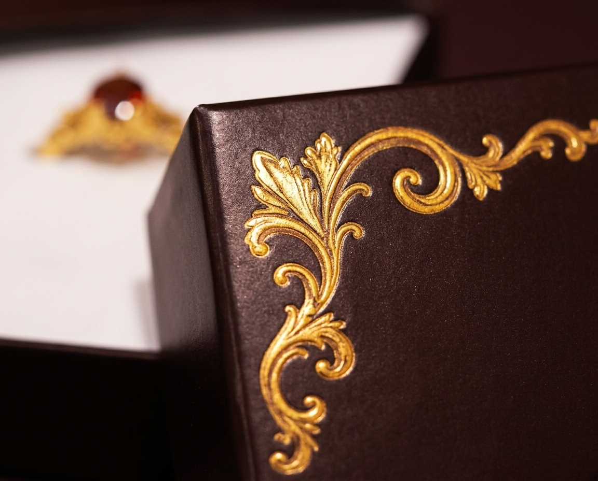

Orielle
Una propuesta de empaque para joyería inspirada en la elegancia, los detalles ornamentales y la arquitectura barroca.

Una inspiración barroca
El proyecto consistió en desarrollar un empaque para una joya, tomando como inspiración la arquitectura y ornamentación barroca observadas durante una visita a un museo religioso. La propuesta busca transmitir exclusividad y sofisticación a través de una presentación elegante, con detalles que evocan la riqueza ornamental de este estilo artístico.
La esencia de Orielle
La identidad visual acompaña la propuesta de empaque mediante una estética delicada y elegante, en la que los tonos profundos y los acentos dorados refuerzan el carácter de la pieza.

Diseño del empaque
Para el desarrollo del empaque se trabajó en la estructura y el sistema de armado, definiendo las formas y dimensiones necesarias para su construcción física. El troquel fue elaborado en Adobe Illustrator como parte del proceso de diseño estructural.


Cuidado en la presentación
La propuesta busca que el empaque complemente la joya y haga parte de su presentación. Los detalles visuales y ornamentales ayudan a construir una experiencia que comunica elegancia y exclusividad.
Proceso en equipo
Proyecto desarrollado en equipo. Mi participación se centró en el diseño del troquel estructural en Adobe Illustrator, definiendo la forma y el sistema de armado del empaque para su posterior construcción física.
← Volver a Packaging